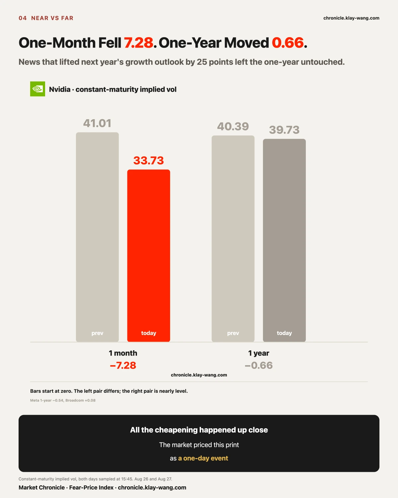
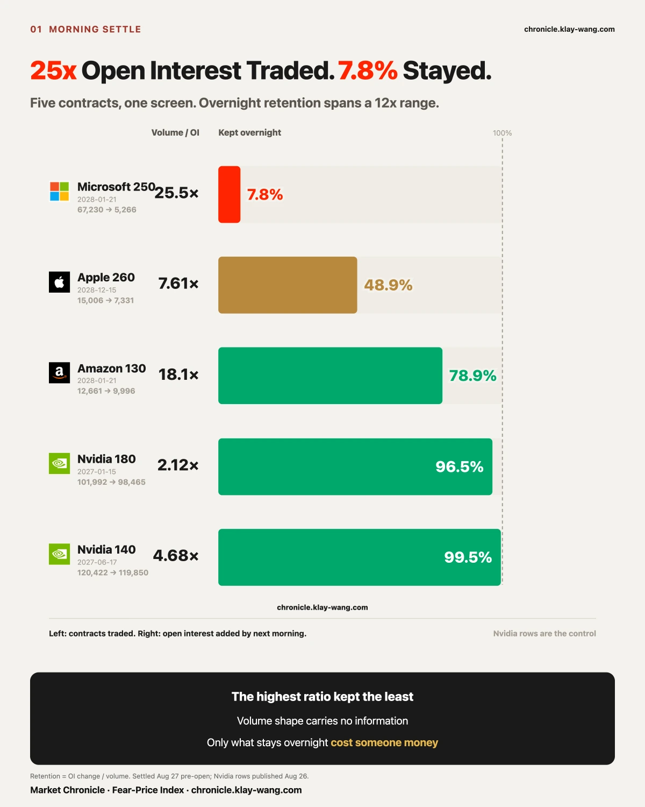
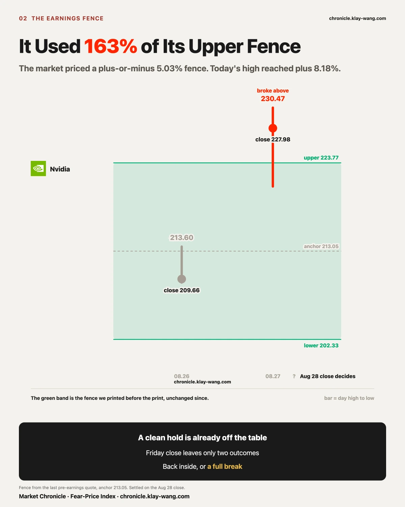
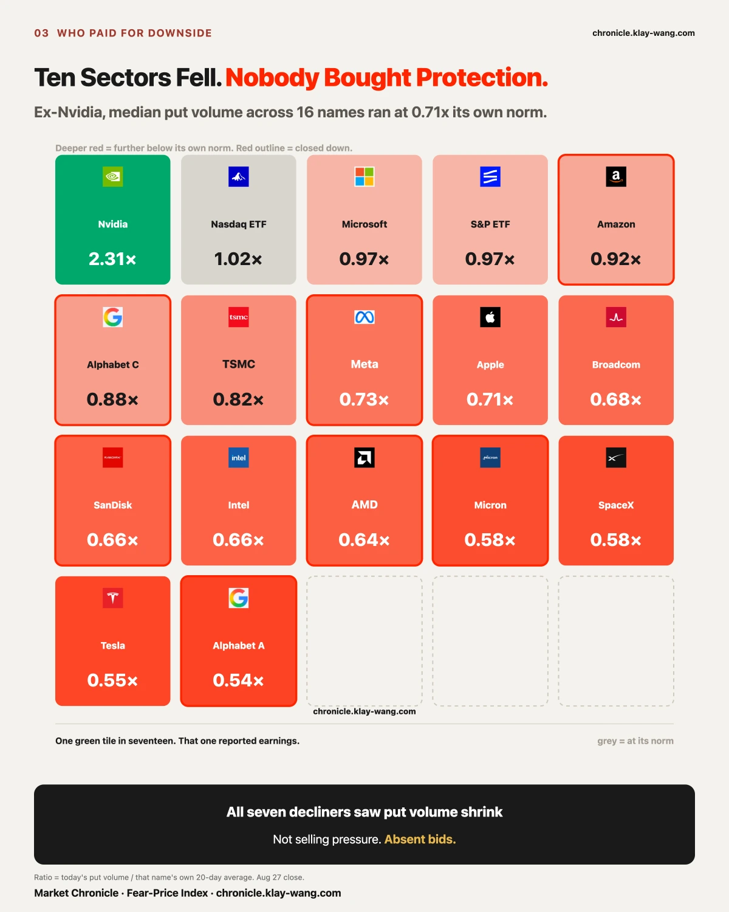
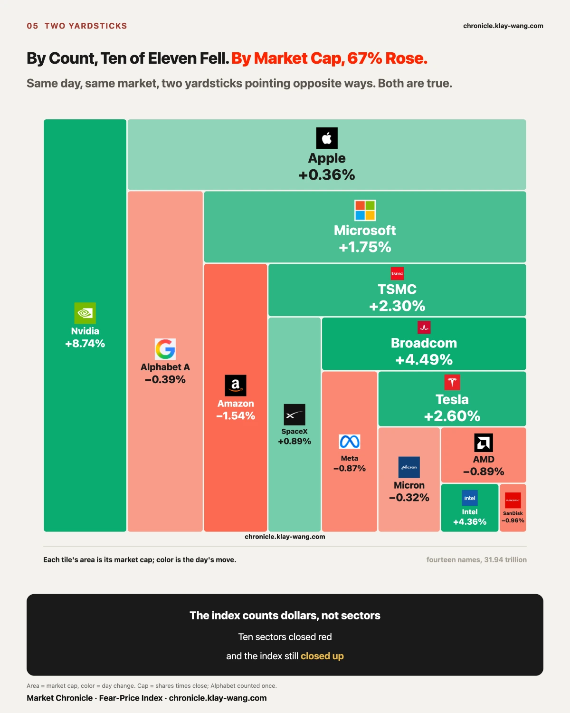
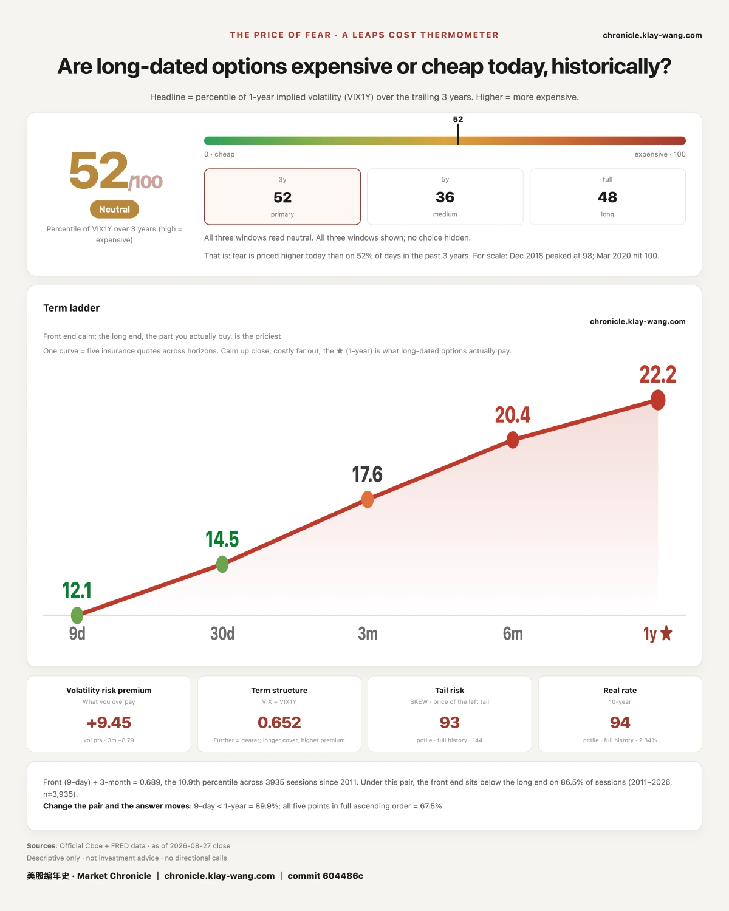

Nvidia rose 8.74% today and closed at 227.98, having traded as high as 230.47. The report carried a rare early guide: roughly 70% revenue growth next fiscal year, about 25 points above the 45% the market had penciled in.
By rights that is news about a year from now.
Look at what actually got repriced, and it was all close in. Premium on the contracts expiring tomorrow went from 217 million to 772 million dollars in a single session. One-month insurance fell from 41.01 to 33.73, down 7.28 vol points in a day.
Its one-year insurance went from 40.39 to 39.73. It moved 0.66.
A headline that lifted next year's growth outlook by 25 points repriced tomorrow's price, tomorrow's premium and one month of insurance, and left the price of one year from now alone. That is not the market failing to notice. That is the market noticing and answering: this is worth a day, not a year.
It can be refuted. If the one-year moves a cumulative 2 points over the next three sessions, we withdraw this and record today as a single-day shape.

Yesterday we printed an open question. Three deep out-of-the-money puts far out on the curve: Microsoft January 2028 250-strike traded 67,230 contracts against open interest of 2,642; Amazon January 2028 130-strike, 12,661 against 700; Apple December 2028 260-strike, 15,006 against 1,973. The test was printed with them: if open interest converges toward the day's volume, positions were opened and stayed. If it returns to where it was, the day was a round trip.
Settlement came in this morning and the three answers were nothing alike.
Of Microsoft's 67,230, only 5,266 stayed. A retention rate of 7.8%. Amazon kept 9,996, or 79%. Apple kept 7,331, or 49%. Add Nvidia's two 2027 deep puts from two days ago, which held 99.5% and 96.5%, and you have five contracts, four names, two mornings, all caught by the same screen, with retention running from 7.8% to 99.5%.
That row of numbers kills a convenient shortcut. How many times volume exceeds open interest carries no information in itself. The highest ratio, Microsoft at 25 times, kept the least. The lowest, Apple at 7.6 times, kept nearly half. They run in opposite directions.
To be precise about the boundary: a round trip is real money too. It just does not stay the night. What we are measuring here is duration, not authenticity.

Before a company reports, the options covering the expiry that spans the print get repriced. Work backwards from what those contracts cost and you get a number: how far the market thinks the stock will travel after the print. That is not a forecast. It is a quote.
We printed Nvidia's fence eight days early, on August 19, frozen 21 minutes before the open: the last expiry before the print carried an expected move of 2.65%, and the first expiry covering it carried 5.42%. Four calendar days apart, twice the price. On the morning of the report the fence settled at its final quote: 10.72 dollars, 5.03%, a band from 202.33 to 223.77 around an anchor of 213.05. Over seven days the width barely moved.
The walk so far. On Wednesday, the day of the print, it traded entirely inside, high 213.60, close 209.66, using 5% of the upper half. Today it gapped up, high 230.47, low 220.90, close 227.98, an intraday range of 4.56%. Against the anchor the high traveled 8.18% while the upper fence is 5.03% wide. It used 163% of the upper half and did not come back, closing 4.21 dollars outside.
So one thing is already settled: this fence cannot be a clean hold. Two outcomes remain.
The rule for calling it was set in advance, written into the Meta section at the end of July: a mid-course reading is a real measurement but it is not the conclusion, and the conclusion is the settlement close, because that is the only point nobody gets to choose. Choosing the timestamp is choosing the answer.
So this fence settles on one number: tomorrow's close. Back inside 202.33 to 223.77 and it went out and came back, like Meta's did. Outside and it broke clean. Of the six before it, five broke, and the only one that held, Meta, held by 0.72 of a percentage point.

Let the good news stand in full first. The report was genuinely strong: 96.2 billion in quarterly revenue, up 106%, with 89 billion of it in data center, more than nine tenths of the total, plus that rare early guide of 70%. Today the AI line rose from silicon to software; Salesforce traded up more than 20% after its own report; risk appetite never left, with MicroStrategy up 11.54%. Everything a bull wanted was there.
Which is exactly why we went looking for the other side. We looked three times and threw out the first two ourselves.
First, a batch of Nvidia puts struck low enough to need an 85% decline. They had appeared one strike at a time over three weeks and today there were six, with volume exceeding all existing open interest. The shape looked like someone betting on a collapse. Then we priced them: 4,754 contracts at one to two cents each, about 9,500 dollars in total. That is not an opinion. That is lottery money.
Second, four large index puts a year out, 168 million dollars of premium, placed in pairs whose legs matched to within a tenth of a percent, and the biggest day in three weeks. Big enough this time. But we missed two things. One was the denominator: that fund traded 10.45 million option contracts today and those four strikes were 0.21% of it, while its put volume ran at 0.97 times its twenty-day norm, below average. The other was composition: for puts struck above spot, most of the premium is intrinsic value, money you get back if nothing moves. Of that 168 million, 139 million was intrinsic. The time value actually spent was 28.8 million. We had overstated it sixfold.
And the third error came before both. We had assumed all along those puts were bought. The tape says how many traded, not who was on which side, and the two sides mean opposite things: buying a put is a bet on decline, while selling one collects premium on the bet that it will not fall, which is a bullish act. Paired legs can be built either way. Same numbers, two opposite readings, and we could rule out neither. The honest sequence is that we decided there was a bet against this rally and then went looking for it.
So on the third pass we changed the question to one that does not require knowing who bought: were more or fewer people paying for downside today than usual?
Only volume is needed for that. Of the seventeen names we track, one traded heavy: Nvidia, at 2.84 times its twenty-day norm on calls and 2.31 on puts. Earnings day, both sides busy, normal. Across the other sixteen, median put volume was 0.71 times each name's own norm.
Seven names closed down. Their put volume: Amazon 0.92, Alphabet C 0.88, Meta 0.73, SanDisk 0.66, AMD 0.64, Micron 0.58, Alphabet A 0.54. All seven below their own norm, no exceptions. Divide each name's put volume by its call volume and compare with its own twenty-day ratio: thirteen of seventeen sit below normal.
So the reading worth keeping is not that someone was buying protection. It is that fewer people were. Ten of eleven sector funds closed red, and across the names we can measure, willingness to pay for downside ran about 30% below normal.
Why that is worth writing down. A decline has two possible sources: people selling, or people not buying. The first leaves a mark in options because selling pressure usually brings hedging demand with it. The second does not. Today was ten sectors red plus a broad contraction in put volume, which looks more like the second, a drift from absent bids rather than a wave of supply. We filed this shape once before, on August 19, with four names; that entry settled on August 26 and came out right. Today makes twice, with the sample at seven.
This is also the only thing we would flag. Not because someone sounded a warning, but because nobody did. When something does break, the fragile state is rarely the one where everyone is buying insurance. It is the one where nobody thinks they need any.
One glance at how a different market prices the same company. Per public reporting, Nvidia's five-year credit default swaps are quoted around 84 to 89 basis points, near the high end of their history and about 25 wider than similarly rated Alphabet and Amazon; one bank opened credit coverage on August 24 at neutral and advised waiting in both the cash and swap markets, citing tail risk that is opaque and sizable. Those numbers are not ours, we do no arithmetic with them, and we do not claim either market caused the other. But the two answers do not point the same way: credit is asking near its historical high for that company's long-term risk, while the one-year insurance we measure moved 0.66.
If long-term risk is genuinely rising, credit marking it first is the normal order, because that money is lent for longer. The equity options layer has not followed yet.
It can be refuted: if median put volume across these seventeen returns to 0.9 times normal within three sessions, today becomes a single-day shape and this comes off the books.

Elsewhere in earnings season, Salesforce delivered a beat last night and traded up as much as 14% after hours. It is not in our tables, so we attach no numbers to it and offer only a view.
Asking whether AI kills SaaS is the wrong question. What SaaS sells was never the interface; it is the workflows, permissions and data nobody wants to maintain themselves, and a model however capable has to be handed those three before it can touch anything. The real risk is not that one company gets replaced wholesale. It is that pricing power slides from per-seat to per-outcome: on the day seats stop growing, revenue may still rise, but the way it rises has changed, and the multiple should change with it. Salesforce's answer this week was to invite the model into its own data rather than wait for the model to take the data out, which is the most sensible bet currently visible.
Views are free, though. The fence in the previous section is being repriced with real money every day. That is what an opinion with a cost looks like.

The index closed up 0.66% and the Nasdaq fund up 1.37%. Pull it apart and today's money falls into three clean piles.
Rising: the AI line, silicon through software. Nvidia's 8.74% was merely the loudest; the software layer ran harder, with Salesforce up more than 20% after its report and the security, design and data names pulled up alongside. Of eleven sector funds, only technology was green, at 3.16%.
Falling: the other ten, every last one, from 0.22% to 1.38%. The composition is the part that matters. The worst was consumer staples at 1.38%, then health care at 1.13%, consumer discretionary at 1.09%, communications at 1.07%. Defensives and cyclicals fell together. That is not a rotation from offense to defense, because a rotation has a buying side, and today the defensive side was selling too.
The third pile says the most: high beta was being bought. MicroStrategy 11.54%, the quantum name 6.07%, the bitcoin miner 5.79%, Coinbase 4.92%, Palantir 4.75%. The money willing to take risk never left. It simply routed around those ten sectors and crowded into two lines, AI and crypto.
One more detail in that pile. Split each move into before the open and after it: of Nvidia's 8.74%, 6.30 points were set before trading began and only 2.30 came during the day. MicroStrategy is the mirror image, with only 2.91 of its 11.54% in the gap and the remaining 8.39 bought a piece at a time through the session. One was priced overnight; the other had someone chasing it after the bell.
So today's shape is not risk appetite rising or falling. It is money moving house inside the market: two lines taking it in, everywhere else letting it out. The index's small gain is what was left after those three piles cancelled.
And on the insurance side, the volatility index fell from 15.21 to 14.51, down 4.6%. The event landed and some of the premium did come out. Which part came out is today's real answer: Nvidia's one-month insurance fell 7.28 vol points while its one-year moved 0.66. What got cheaper was close in. The price of far away did not move.
The test we printed yesterday: Nvidia's one-year at 40.39, and a jump of more than 2 points would mean the market had been standing aside ahead of the event, while holding near 40 would mean the long end never treated this print as something that changes the shape of a year.
It closed at 39.73. It moved 0.66. The second half of the test holds.
Same name, same session: one-month insurance fell from 41.01 to 33.73, a collapse of 7.28 vol points. The term structure flipped in a day, from a front month richer than the one-year to a front month well below it. Insurance did get cheaper, and all of the cheapening happened inside one month.
Tomorrow's expiry. A word on the yardstick first: yesterday was an inflation print, so this table's floor opens to its widest and near-dated orders across all fifteen names get counted; today is an ordinary session and only the names inside an earnings window get counted. So this expiry is compared only against yesterday's like-for-like slice: from 217 million to 772 million dollars, up more than half again. The test printed yesterday said continued thickening means the buying is aimed at the stretch after the print. That holds, and not by a small margin.
Broadcom's inversion widened again. One-month insurance minus one-year: 3.17 yesterday, 3.70 today. The test was that a return below 2.0 marks the news week as temporary pricing, while further widening says the risk premium behind pulling a year forward is unfinished. It widened. Worth noting where the widening came from: the front month rose 0.61 and the one-year moved 0.08. The long end again did not move. The shares rose 4.49%.
Meta we cannot call. Yesterday's test had two doors: a return below 41.83 would mark it as noise on the settlement day, while further gains would mean that bill is being priced in slowly. It closed at 41.98, through neither door. On the day after the settlement landed, the one-year gave back 0.54, so yesterday's 0.69 gain was neither reversed nor extended. Forcing it into one of the two would be us deciding on the market's behalf, so this one gets no answer, the test stands unchanged, and it stays on the books.
One more did not settle today: the new Federal Reserve chair speaks tomorrow, and that test lands on tomorrow's close.
Tomorrow's close settles two accounts, and the tests for both were printed in earlier issues.
The first is the earnings account: Nvidia's fence, 202.33 to 223.77, inside or outside, covered above.
The second is the rates account. On Monday we printed a shape: premium on options expiring Friday thickened from 455.5 million to 885.3 million dollars while one-year insurance did not move at all, and the reading was that what was being bought was not a direction but his reaction function at the moment he opens his mouth. Today's reading for that expiry we cannot record: this table only reaches the two names inside an earnings window, so that 772 million is Nvidia's and Broadcom's money, earnings money, not money wagered on the speech. Monday's 885.3 million counted fifteen names. Two different yardsticks, so this waypoint stays blank. The test is unchanged and settles tomorrow at the close all the same.
The last labor reading before he speaks arrived this morning: initial claims at 203,000, below expectations, layoffs still low, unemployment parked near a historic low. The labor market is not handing anyone a reason to ease, and rate futures were already positioned for at least one hike before year end. Data and wager point the same way. What is left is what he actually says.
One commentator compressed the week into a line: Nvidia decides how much more earnings can grow, and the Fed chair decides what the market is willing to pay for those earnings. Borrowing that framing: two ledgers ride on the same close, and tomorrow night we come back and settle them one at a time.
Background only, all from public reporting and none of it ours: the 30-year Treasury yield touched its highest since 2007 last week, Treasury doubled the size of its long-bond buybacks, and three large technology companies have issued more than twice as much debt this year as in all of last year. Issuers and insurance buyers are both repricing longer time.
One. A headline that lifted next year's growth outlook by 25 points repriced tomorrow's price, tomorrow's premium and one month of insurance, and left the price of one year from now alone. The long end did not miss it. It saw it and said this is worth a day.
Two. Only one of eleven sector funds was green, and the money willing to take risk never left. MicroStrategy rose 11.54%, the quantum name 6.07%. Money was not exiting; it was crowding into two lines inside the market while the other ten places let it out.
Three. The contract that traded 25 times its open interest kept 7.8% of it overnight, and the one with the lowest ratio kept nearly half. The shape of volume carries no information. Only what is still there the next morning cost someone anything.
Fear-Price Index by Market Chronicle · Aug 27, 2026 · 52/100: one year volatility VIX1Y at 22.24, in the 52nd percentile of the past three years. Higher means dearer. Daily ledger and methodology → chronicle.klay-wang.com · Attribution: Fear-Price Index · Market Chronicle
Options flow and per-name data → chronicle.klay-wang.com/options
Gauge reading and both ledgers → chronicle.klay-wang.com
Both pages update after every session and carry their own date. They cannot be edited afterwards.